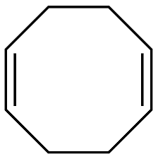
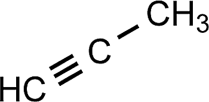

N omenclature
The Process
Naming Alkenes/Alkynes is extremely similar to naming alkanes. For gerneal IUPAC nomenclature names, please refer to the nomenclature section in the Saturated Hydrocarbon section. The small differences in naming comes down to the numbering of the main chain (along with the -ene for double bonds and -yne for triple that you use as the suffix instead of -ane at the main chain name). Since there is either a double bond(s)/triple bond(s) somewhere in the main chain, you need to priortize it while numbering the main chain instead of the side chains. Find the side of the molecule to start numbering from that will make the double/triple bond the smallest number, and give the rest of the numbers out after that (you only have to find the carbon number where the double/triple bond STARTS, not finishes). The number where the double/triple bond(s) start should be placed either before the main chain name (...-2-butene) or in between the prefix and suffix of the name (...-but-2-ene). Lastly, there is one other difference. In Alkenes (double bond hydrocarbons) there is the possibility of a cis/trans structure. This is a result of the extra pi bond which limits the rotation of the sigma bond, which makes the position of the side chains and atoms off the main chain crucial to the molecules identity. If two of the highest priority side chains (either highest atomic # or most carbons in side chain) are directly horizontal/vertical to each other, "cis" is placed as the first part of the naming sequence. If the two highest priortiy groups are diagonal across the main chain/central atom(s), then "trans" is placed as the first part instead.
(cis/trans [if alkene])...-(# off the main chain)-(main chain carbon # prefix)(# of carbons in side chain prefix)yl(# of carbons in main chain prefix)-(double/triple bond main chain carbon #)-ene/yne
(cis)...-2-diethylpent-3-ene
(cis)-pent-2-ene
 1,5-Cyclooctadiene (If there is more than one triple/double bond, use the prefixes di, tri, etc!)
1-Propyne (Or just Propyne!)
Cyclooctyne
B ack